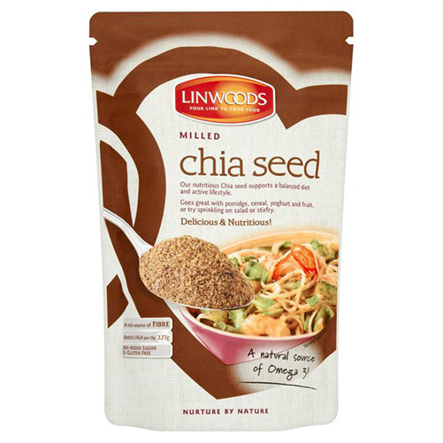
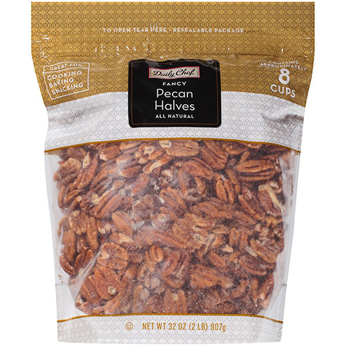

Overnight Oats Recipe
Prep Time: 2 minutes
Yield: 1 large serving or 2 small servings
Rating: 4.5 stars
Ingredients
- 1/3 cup plain Greek yogurt
- 1/2 cup rolled oats (heaping)
- 2/3 cup unsweetened milk of choice
- 1 tablespoon chia seeds or ground flaxmeal
- 1/2 teaspoon vanilla extract
- Pinch of salt
- 0–2 tablespoons honey or maple syrup
Instructions
1. Whisk together all ingredients in a medium-sized mixing bowl. Spoon into a jar with a tight-fitting lid.
2. Close and refrigerate for at least 4 hours, preferably overnight before eating.
Suggested Dietary Swaps
Vegan
Sugar Free
Gluten Free

Rolled Oats
$12.99

Chia Seeds
$15.99

Pecans
$13.99

Maple Syrup
$15.99